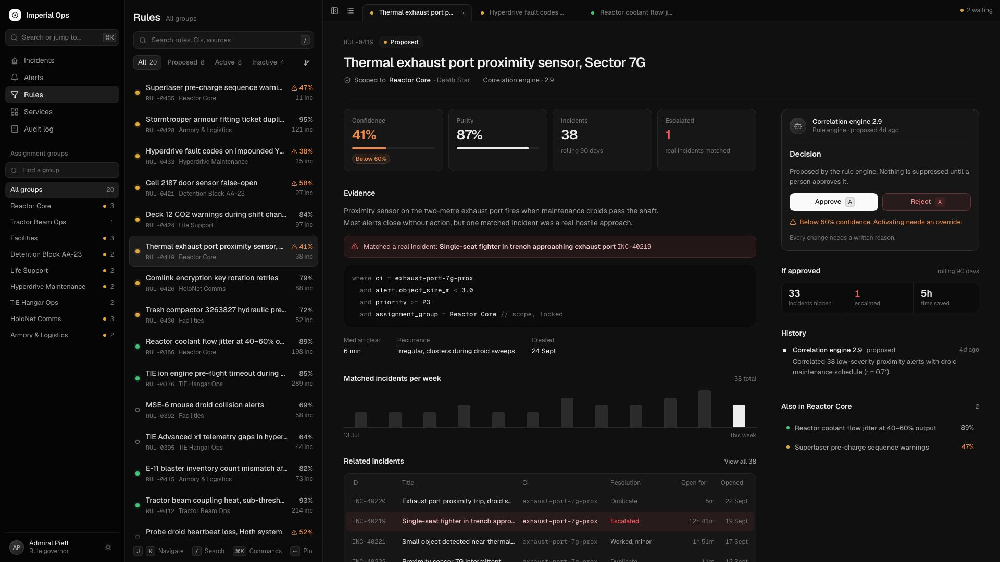
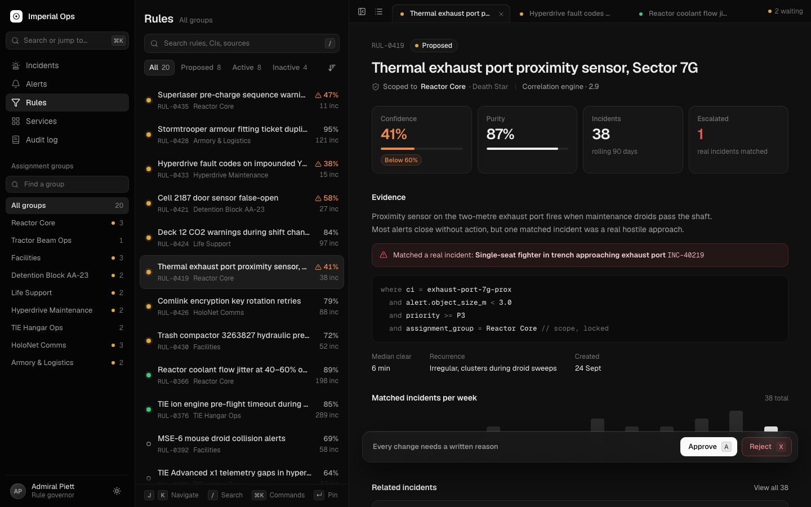
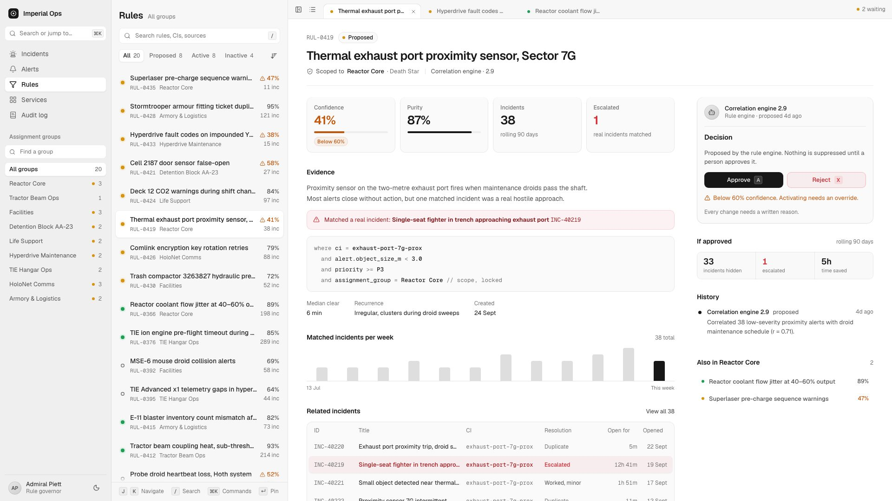
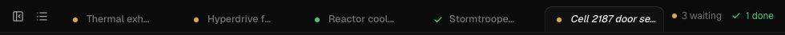
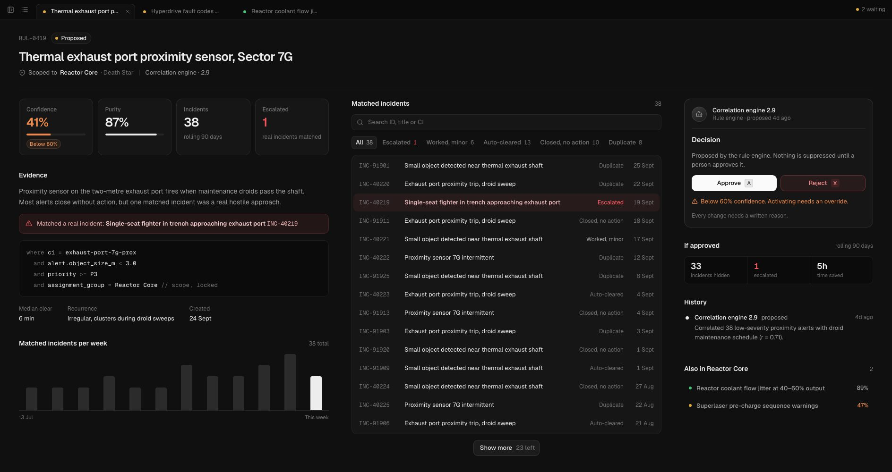
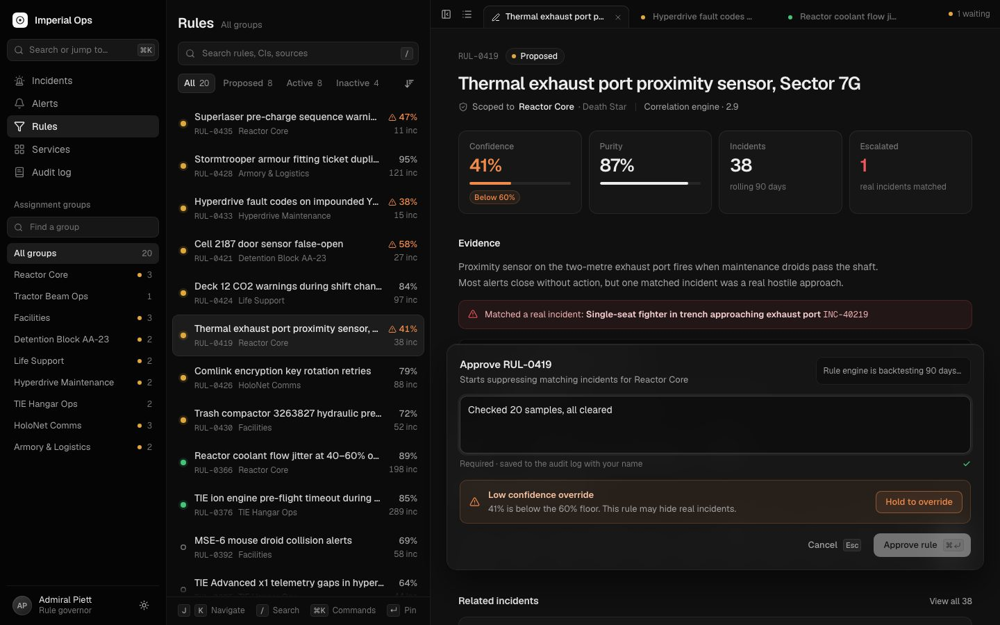
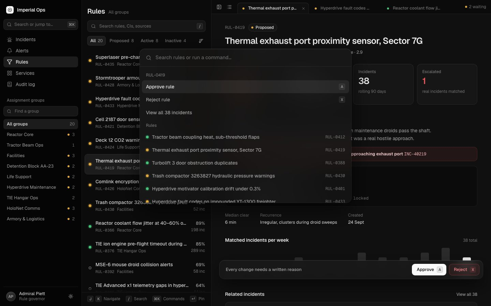

How Midnight works
A guided tour of the rule management app: how the project is organised, how to read the code, how the pieces talk to each other, and why each decision was made. Read it with the code open beside you. Every section points to the file and line it's describing.

Paths like hooks/usePaneMode.ts:8 are inside src/pages/rule-management/, unless they start with src/, lib/ or styles/. The live demos (green dot) are small working copies of the real technique, so press, drag and resize them. The theme button in the sidebar switches this page the same way the app switches its own theme.
How the project is organised
Every file has one job, and the folder it lives in tells you what kind of job.
The four kinds of file
| Folder | Holds | Uses React? |
|---|---|---|
model/ | Knowledge: what a rule is, what's allowed, what things are called. Pure functions and lookup tables. | No |
hooks/ | Behaviour: state that changes over time, and reacting to the outside world (keys, window size, timers). | Yes: useState, useEffect… |
components/ | Looks: what's drawn on screen, and passing clicks back up. | Yes: returns JSX |
data/ | Where data comes from. Today it's mock data; in the real app, the API. | No |
Where does new code go?
| You want to… | Put it in |
|---|---|
| Change who can approve what, or the 60% floor | model/policy.ts |
| Change some wording, like a status name | model/labels.ts (or the component, for one-off text) |
| Add a keyboard shortcut | The keys map in RuleManagementPage.tsx:83 |
| Add a new section to the rule detail | A new file in components/RuleDetail/ + a line in RuleDetail.tsx |
| Change a colour everywhere | src/styles/theme.css, both dark and light |
| Style one component | The .css file next to it |
| Connect the real backend | data/mockData.ts and hooks/useRulesStore.ts (chapter 19) |
The old version was one 1,400-line file. Now every file is short enough to read in one go, and its name tells you what's inside. When you have a question, you can point at one file. Keeping model/ free of React also means the rules can be tested, or reused on a server, without any UI.
Reading the code
Most of the symbols that look confusing are plain JavaScript. Here's a decoder, using lines from this project.
JavaScript: the language
| You see | It means | From this project |
|---|---|---|
const x = … | A named value that won't be reassigned | const LOW_CONFIDENCE = 0.6 |
(a) => … | A function (an "arrow function") | onClick={() => onSelect(rule.id)} |
{ rule, wide } as a parameter | Pull named values out of an object ("destructuring") | function History({ rule }) |
[a, b] = … | The same, from an array | const [theme, toggleTheme] = useTheme() |
... | Copy everything from this object or array | { ...r, status: 'active' } |
`${a} ${b}` | Text with values inserted | `${rule.id} ${rule.name}` |
a ? b : c | If a, then b, otherwise c | theme === 'dark' ? <Sun/> : <Moon/> |
a && b | If a, then b (otherwise nothing) | {low && <span>Below 60%</span>} |
a?.b / a ?? b | Only read b if a exists / use b if a is missing | decision.target?.rule.id ?? null |
.map() .filter() .find() | Transform each item / keep some / find one | rules.filter((r) => r.groupId === id) |
import / export | Share code between files | export function Sidebar() |
TypeScript: labels on the data
TypeScript is JavaScript plus labels that describe the shape of data, so your editor catches mistakes before you run anything. Delete the labels and it's plain JavaScript.
React: nine ideas cover almost everything
- Components are functions that return what to show:
function Stats() { return <div>…</div> } - JSX is the HTML-looking part. Inside it,
{ }means "JavaScript goes here". - Props are a component's inputs:
<History rule={selected} /> useStateis a value that redraws the screen when it changes: open/closed, search text, the selected rule.- Derived values: anything you can work out from state is calculated, not stored. See chapter 6.
useEffectmeans "after drawing, do something outside React": listen for keys, start a timer, measure.useRefis a box that keeps a value without redrawing: an input to focus, a timer id.useMemosaves a calculation until its inputs change.keyis how React tells list items apart. Change a component's key and React starts it fresh.
react.dev → Learn React (free, official) teaches exactly those nine, in that order. javascript.info covers the language. The TypeScript Handbook page "TypeScript for JavaScript Programmers" is enough TypeScript to start. Then try the exercises.
How data flows
The single most important picture. Data goes down; events come back up.
data/mockData.ts20 rules as plain objects
hooks/useRulesStore.tsholds the rules, can
apply() a changehooks/useRuleView.tsfilter + search + sort →
visibleRuleManagementPage.tsxpasses them to every component
act('approve')opens the decision form
useDecision → validate()reason long enough? override needed?
apply(id, action, reason)new status + audit entry
list, counts, tabs, history and toast all update on their own
Why it's built this way
No component ever edits a rule directly. There's exactly one place that changes rules (apply() in hooks/useRulesStore.ts:18), and everything on screen is calculated from the rules. So after a decision, the tab counts, the sidebar dot, the tab's ✓, the history timeline and the list all update at once. Nothing has to be told to refresh.
Store the minimum, derive the rest. The tab counts aren't stored anywhere; they're counted from the rules on every change. You can't forget to update a number that's always recalculated.
The data model
What a "rule" is. Everything on screen is one of these fields, formatted.
- Numbers stay raw. Confidence is stored as
0.93, never"93%". Turning it into text is the UI's job (pct()insrc/lib/format.ts:6). The same goes for dates (ago(),shortDate()). - The audit log is append-only. A decision adds a new entry; it never edits an old one.
- "Rejected" isn't a status. A rejected rule is
inactivewith a last audit entry ofrejected.statusLabel()tells them apart (model/labels.ts:39).
The rules of the game
Who can do what, and when. All small pure functions in model/policy.ts.
A proposed rule can also be rejected, which sends it straight to Inactive.
actionsFor decides which buttons exist. Nothing hard-codes "show Approve here". The action bar, decision card, incidents panel and ⌘K all ask actionsFor(rule), so they can never disagree.
A pure function only uses its inputs and returns a result. No React, no side effects. That makes it trivial to test and safe to call from anywhere. In the real app, the backend must enforce the same rules, because a browser can always be bypassed.
State: store, derive, keep
Three kinds of state, each living in a different place on purpose.
| Kind | Example | Where |
|---|---|---|
| Shared data | The rules | hooks/useRulesStore.ts (a zustand store) |
| View state | Status tab, search text, group, sort | hooks/useRuleView.ts |
| Page UI state | Selected rule, palette open, panels hidden | useState in RuleManagementPage.tsx |
| Component state | The group search text, the hold timer | Inside the component that uses it (Sidebar, HoldButton) |
The group search text lives in Sidebar, because nothing else needs it. The selected rule lives in the page, because the list, the tabs, the detail and ⌘K all need it. The rule: put state in the lowest component that every user of it sits inside.
The store: copy, don't change
The view: derive, don't store
Search (matches(), model/browse.ts:38) splits your query into words and requires every word to appear somewhere, which is why "reactor 0419" works.
Keeping the selection valid
If a filter hides the selected rule, the first visible rule is selected instead, unless the rule is open as a tab. Tabs are your working set, and the list's filters don't get to take them away.
Layout & pane modes
Three columns, and a detail pane that rearranges itself based on its own width.
The detail pane has three layouts. What picks one isn't the window size (a media query). It's the pane's own width, measured with a ResizeObserver:
| Mode | Pane width | Arrangement (RuleDetail.tsx) |
|---|---|---|
| narrow | < 1100px | One column. Actions in a floating glass bar at the bottom. |
| wide | 1100–1699px | Content + a 380px decision rail: decision, impact, history, "Also in…". |
| ultra | ≥ 1700px | Stats, evidence and chart on the left; the full searchable incident list in the middle; the rail on the right. |


Inside RuleDetail, each section is a component (Stats, Evidence, History…) or is built once in a variable (header, volume, incidents). The mode only decides where they go.
The pane's width depends on the window and on whether the sidebar and list are showing. Hide both with [ ] and the same window gives the pane an extra 620px. A media query only knows the window; measuring the pane is always right.
The working set (tabs)
The list is for finding rules. The tabs are the rules you're working on, each with its status at a glance.

Preview, then pin
Clicking a rule in the list shows it as an italic preview tab, which is replaced as you browse (like VS Code). It becomes a real tab when you pin it: press ↵, double-click it, or start a decision on it.
The status on each tab is derived, not stored
Nothing tells a tab to change. After a decision, the rule's status changes in the store, markDecided records the id, and every tab recalculates its own state.
Tucking away the sidebar and list
The hidden column also gets the inert attribute, so Tab and screen readers skip it while it's hidden.

Component tour
Who contains whom, and each one's job in a sentence.
Props down, callbacks up
Children never reach up and change the page's state. RuleList doesn't know what selecting a rule does; it calls onSelect(id). DecisionCard doesn't open the form; it calls onAction('approve'). The page decides what those mean. That's why ActionButtons works in three places: it only needs a rule and a callback.
The keyboard system
One listener for the whole page, with a clear order of who gets each key.
| Keys | Does |
|---|---|
| ⌘ K | Open / close the palette (works everywhere) |
| J K or ↓ ↑ | Next / previous rule in the list |
| / | Focus search (the incidents search when that panel is open) |
| A X E D | Approve, reject, activate, deactivate (if allowed) |
| ↵ | Pin the selected rule as a tab |
| [ ] | Hide / show the sidebar and the list |
| Esc | Close the form → leave a field → close the incidents panel |
| ⌘ ↵ | Submit the decision |
Who gets the key: the priority ladder
- ⌘K always wins. It toggles the palette.
- If the palette is open, stop: cmdk handles its own keys.
- If the decision form is open, only Esc and ⌘↵ do anything.
- If you're typing in a field, letters are text. Esc, ↵ and ↓ leave the field.
- Keys held with ⌘ / Ctrl / Alt are left for the browser.
- Finally, look the key up in the page's
keysmap.
The ladder lives in hooks/useKeyboardShortcuts.ts. The page only says what each key does:
live ref trickA function created once keeps seeing the values from when it was created. That's a stale closure, and J would always move from the first rule. Writing the latest values into live.current on every render gives you one listener that always sees fresh state.
Making a decision
The core job of the page, from key press to toast.

- You press A or click Approve →
act('approve', via)(RuleManagementPage.tsx:63) checks it's allowed, closes the incidents panel, pins the rule's tab, and remembers how you opened it. decision.open(rule, action)resets the form. The rule's tab switches to the ✏️ pen.- The Composer appears: floating in narrow mode, in place of the decision card in wide. Keyboard-opened: instant. Click-opened: a short animation.
- For approve/activate, the backtest runs (a 2.4s timer in
hooks/useBacktest.ts). - Type a reason: the counter shows
7/12, then a ✓. - Below 60% confidence, hold the override for 2 seconds.
- Submit (⌘↵ or the button) →
validate()→apply()→ the tab shows ✓, a toast confirms, history gets a new entry.
useDecision knows nothing about how the form looks; Composer knows nothing about saving. When you connect the real API, only the hook changes.
Hold to override
A slow, deliberate confirmation for a risky action. JavaScript decides; CSS shows it.
- The truth is a 2-second timer (
components/Composer/HoldButton.tsx:8). Pressing starts it; letting go cancels it. Only when it finishes doesonDone()run. - The picture is a CSS transition of the same 2 seconds (
HoldButton.css). A solid orange copy of the button sits on top, clipped away withclip-path: inset(0 100% 0 0). Holding animates it toinset(0), linearly, like a progress bar; releasing snaps it back in 200ms. - The copy has its own label, so the text changes colour exactly at the fill's edge as it sweeps.
Impact & incidents
The evidence you need to decide, in reach before you press anything.
The Impact card
In the rail, ImpactCard shows how many incidents the rule hides (or would), how many were real (escalated), and time saved. The heading adapts: "If approved", "Impact so far", "If activated". The numbers come from estimateImpact() (model/policy.ts:61). The Composer's backtest uses the same function, so the two can't disagree.
One incident browser, two places
IncidentBrowser (search, resolution filters, and a page of results at a time) is used by the "View all" panel (50 at a time) and inline in the ultra layout (15 at a time). Same code, different props.
key trick: reset state for freeThe browser is rendered with key={rule.id}. Move to another rule and the key changes, so React throws the old one away and starts fresh: empty search, "All" tab. The Composer does the same with key={`${rule.id}-${action}`}.
The styling system
Every colour is a variable. Components have their own CSS; shared pieces live in src/styles/.
Where styles live
| File | Holds |
|---|---|
styles/base.css | Resets, easing curves |
styles/theme.css | Every colour token, dark and light, plus the theme dissolve |
styles/ui.css | Building blocks used everywhere: buttons, search box, tabs, status dots, keys, links, empty states |
components/*/X.css | One component's styles, imported by that component: import './Sidebar.css' |
styles/accessibility.css | Reduced transparency and high contrast, loaded last so it wins |
When two rules are equally specific, the one loaded later wins. main.tsx imports accessibility.css after the app for that reason. Where a component needs to beat a shared style, it uses a more specific selector instead of relying on order: .mn-search.mn-group-search (two classes) beats .mn-search (one) whatever the order.
Layers: material weight encodes hierarchy
Text has three levels (--fg, --fg-2, --fg-3), lines have three strengths, and colour is reserved for meaning: green = active, amber = waiting, orange = low confidence, red = escalated or danger. White is the one accent.
Why the tokens are declared on four selectors
Menus, ⌘K and toasts are portalled: rendered at the end of <body>, outside .mn, so they can float above everything. CSS variables only pass down to children, so those classes need the tokens too. The light theme (theme.css:85) redefines the same names; no component has any theme logic.
State lives in data attributes
|| undefined trickdata-selected={false} would render data-selected="false", which still matches [data-selected]. false || undefined is undefined, and React leaves the attribute out.
- Hover only where hover exists: inside
@media (hover: hover) and (pointer: fine), so taps on phones don't leave things highlighted. - Tabular numbers (
font-variant-numeric: tabular-nums) keep counts from wobbling. - Scroll edges fade instead of hard dividers (
RuleList.css:50, amask-imagegradient).
Glass & materials
Floating UI (action bar, form, menu, ⌘K, toasts) is translucent glass, so you can sense the page underneath.
- A partly transparent background, or there's nothing to see through.
backdrop-filter: blur()blurs what's behind, but only inside the element's box.saturate()stops the blurred colour going muddy.- An edge and a shadow make it read as a sheet floating above the page.
With "reduce transparency" or "increase contrast" turned on in the operating system, every glass surface turns solid (styles/accessibility.css).
Motion
Animate the rare moments; keep the frequent ones instant.
| What moves | How | Timing |
|---|---|---|
| Theme switch | New theme dissolves over the old (View Transitions) | 200ms ease-out |
| Decision form (clicked) | Fades up from 8px, un-blurs | 220ms ease-out |
| Decision form (keyboard) | No animation | instant |
| ⌘K palette | No animation: used 100+ times a day | instant |
| Sidebar / list collapse | Grid columns slide shut | 240ms ease-out |
| Incidents panel | Slides in 16px from the right | 200ms ease-out |
| Hold fill | Sweeps left → right; snaps back on release | 2s linear / 200ms |
| Sort menu | Scales in from its button | 150ms ease-out |
Enter animations with no JavaScript: @starting-style
The theme dissolve
Press the theme button in the sidebar: this page uses the same code.
The ⌘K palette
Search anything, do anything, without the mouse.

valueis what search matches, not what's displayed. That's how "RUL-0419" finds a rule by id and "group reactor" finds a group.run()wraps every command so the palette always closes afterwards. It's written once.
Small pieces worth stealing
Patterns you'll reuse in other projects.
WeeklyBars: a chart with no chart library
Twelve <div>s, each (value / max) * 100% tall (at least 2%). Every bar can take focus and has an aria-label. The tooltip flips inwards near the edges. (components/common/WeeklyBars.tsx)
Meters use scaleX, not width
With transform-origin: left, scaleX(0.93) draws a 93% bar without making the browser recalculate layout.
Search that picks on Enter
Lookup tables instead of if/else
Record<RuleAction, …> must have an entry for every action, so if you add a new action, TypeScript points at every table you forgot.
What's mock, what's real
Everything the UI does is real. The data behind it isn't. This is the list to swap when you connect Denoise.
| Mock | Where | Becomes |
|---|---|---|
Rules, groups, CURRENT_USER | data/mockData.ts | API queries; the signed-in user |
allIncidents() | data/mockData.ts:798 | GET /rules/:id/incidents?q=&resolution=&cursor= |
INITIAL_OPEN_TABS | data/mockData.ts:10 | Start empty, or remember the user's tabs |
NOW (a frozen date) | src/lib/clock.ts | new Date(); server timestamps |
apply() | hooks/useRulesStore.ts | An API call with loading and error states |
Backtest timer, estimateImpact() | hooks/useBacktest.ts, model/policy.ts | The backtest API, or hide the card |
| Brand, nav links, copy | components/Sidebar/Sidebar.tsx and elsewhere | Real routes; Denoise wording |
Known issues
An honest list. Good practice: read each one and work out why it happens.
| Issue | Why it happens |
|---|---|
| ⌘K → a rule in another group selects a different rule | The palette resets tab and search but not the group (RuleManagementPage.tsx, onSelect); then the "keep selection valid" effect replaces it. |
| Hold can confirm after a cancelled touch | HoldButton has no onPointerCancel, so the timer keeps running if the browser cancels the touch (e.g. to scroll). |
| Rule list unreachable with Tab / screen readers | Rows are divs in a list that can't take focus. |
| No shortcut to switch tabs; tabs forgotten on reload | Not built yet: the working set is prototype-level. |
| Sidebar links can't be focused | <a> with no href. |
| No URL state, no virtualisation, no small-screen layout | Out of scope for a prototype; needed for production. |
Exercises
The fastest way to make this code yours: small changes where you already know what should happen.
- Change some wording. Make the empty list say "Nothing here" instead of "No rules match". Hint: search the project for the text (⌘⇧F). It's in
RuleList.tsx. - Fix the ⌘K bug from Known issues. Hint: the palette's
onSelectinRuleManagementPage.tsxcallsupdate({ status: 'all', query: '' }). What else does it need to reset? - Add a sort option, e.g. "Escalated". Hint: add a key to
SortKeyandSORT_LABELinmodel/browse.ts, and a case insortRules. TypeScript will tell you if you miss one. The menu and ⌘K pick it up automatically. Why? - Add a ⌘K command: "Show escalated incidents". Hint: a new
Command.IteminCommandPalette.tsx, callingonViewIncidents. - Add a keyboard shortcut: W closes the current tab. Hint: one line in the
keysmap, usingcloseTab. - Your first
useState: a button that hides the weekly chart. Hint: state inRuleDetail.tsx, and{showChart && volume}. - Fix the hold bug. Hint: one more event on the button in
HoldButton.tsx.
Point at the file and line and ask. The structure means every question has a small, specific place to look.
Glossary
The terms used in this guide, in plain words.
| Component | A function that returns what to draw. Its name starts with a capital letter. |
| Hook | A function starting with use that gives a component state or behaviour. |
| Props | A component's inputs, passed like HTML attributes. |
| Derived state | A value calculated from other state every render, instead of stored. |
useMemo | Remembers a calculation until its inputs change. |
useRef | A box that holds a value across renders without redrawing. |
useLayoutEffect | Like useEffect, but runs before the browser paints, so measuring doesn't flash. |
| Stale closure | A function that keeps seeing old values because it was created during an earlier render. |
| Capture phase | Events travel down to the target, then bubble up. Capture listens on the way down, first. |
| Portal | Rendering something at the end of <body> so it floats above everything. |
inert | An attribute that makes an area unclickable and skipped by Tab and screen readers. |
| zustand | A tiny library for state that many components share. |
| ResizeObserver | A browser API that tells you when an element's size changes. |
| View Transitions API | document.startViewTransition(): snapshots before and after a change and animates between them. |
flushSync | Makes React apply a state change to the page immediately. |
@starting-style | CSS for "what this looked like before it existed", so elements can animate as they appear. |
backdrop-filter | Applies blur or saturation to whatever is behind an element. |
| Specificity | How CSS decides between two rules: more specific selectors win; if equal, the later one wins. |
| Design token | A named value (--fg-2) used everywhere instead of raw colours. |
Where to go next
Open RuleManagementPage.tsx and read it top to bottom. It's the table of contents for the code: every component and hook it uses has its own short file. Then pick an exercise.